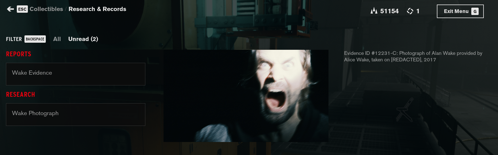
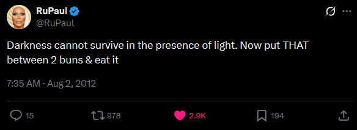

It's alright! It plays like regular Control, so it feels pretty nice. It doesn't do anything special with Control's setting, which is a shame, because that's the best part of the game. And all the Alan Wake stuff feels kinda half-baked. But it's, you know, it's alright. It was fun. The ending sucks though, it basically just goes "Alan Wake will return in Alan Wake 2" and then when you go back to the main menu a huge ad for Alan Wake 2 pops up. I already bit the bullet and bought the game on EGS guys, give it a break. And this is the GOG version, so it's not even available on the same marketplace!

AAAAHHHHHHHHHHHHHHHH‼️‼️‼️‼️‼️‼️‼️
On to Alan Wake 2 proper, then. I'll probably watch the Night Springs miniseries before then, but, like, I think that's everything to prepare. Siri, play the light is coming by Ariana Grande 🌞😎.

💡🔦🕯️🧨🪔🏮🔆